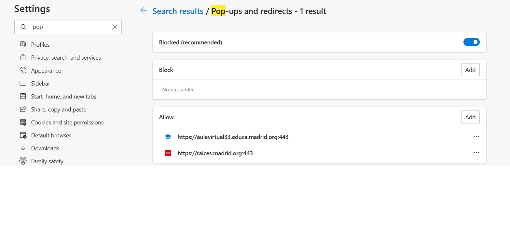

Did a popup window appear when this page was loaded?
Or was it blocked?
Do you know how to locate your popup permissions??
Change your default pop-ups & redirects settings on your computer
Open Chrome.
At the top right, click the three dots, then Settings.
Click Privacy and security Site Settings. Pop-ups and redirects.
Choose the option that you want as your default setting.
